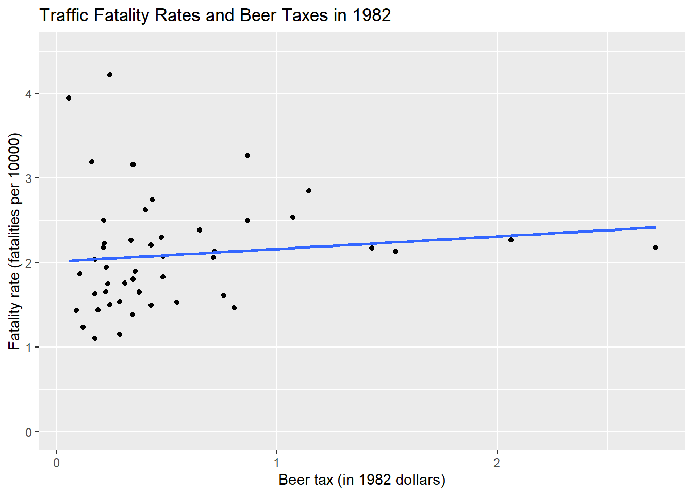
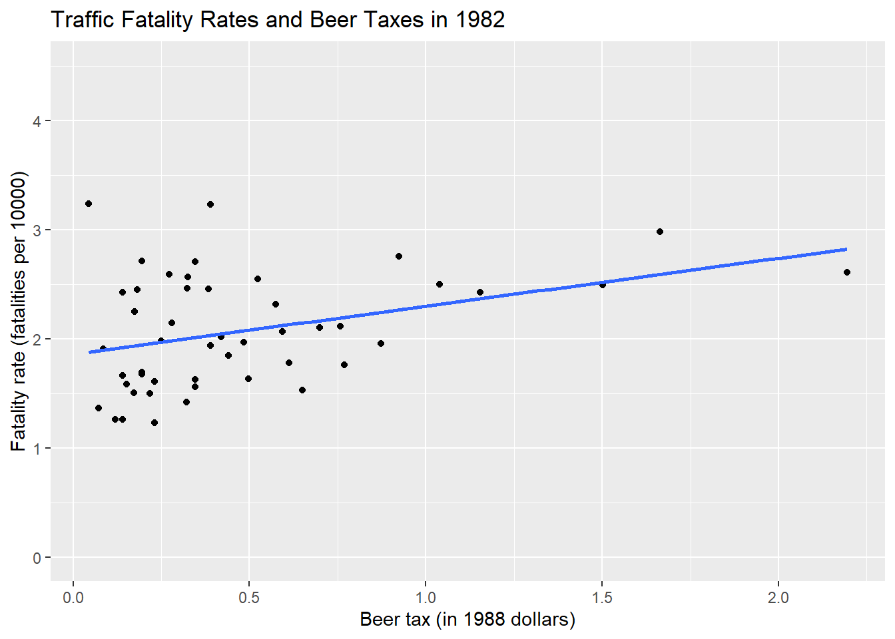
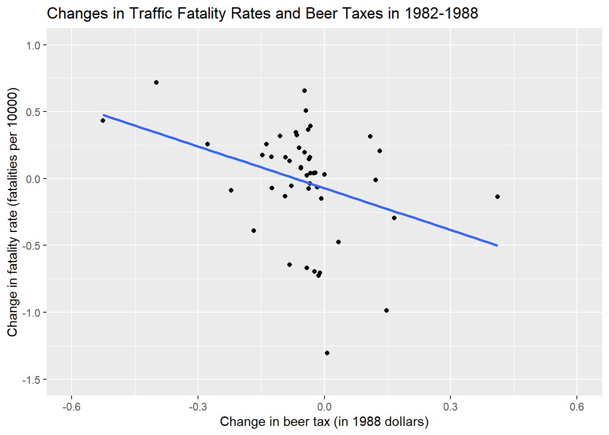

## # A tibble: 7 x 2
## year number
## <fct> <int>
## 1 1982 48
## 2 1983 48
## 3 1984 48
## 4 1985 48
## 5 1986 48
## 6 1987 48
## 7 1988 48\[ FatalityRate_{it} = \beta_0 + \beta_1 BeerTax_{it} + \beta_2 Z_{i} + u_{it}\] \[\widehat{FatalityRate_{i1988} - FatalityRate_{i1982}} = -\underset{(0.065)}{0.072} -\underset{(0.36)}{1.04} \times (BeerTax_{i1988}-BeerTax_{i1982}).\] ?plm You can also embed plots, for example:
## Warning: package 'moderndive' was built under R version 3.6.3## # A tibble: 2 x 7
## term estimate std_error statistic p_value lower_ci upper_ci
## <chr> <dbl> <dbl> <dbl> <dbl> <dbl> <dbl>
## 1 intercept 2.01 0.139 14.5 0 1.73 2.29
## 2 beertax 0.148 0.188 0.788 0.435 -0.231 0.528## # A tibble: 2 x 7
## term estimate std_error statistic p_value lower_ci upper_ci
## <chr> <dbl> <dbl> <dbl> <dbl> <dbl> <dbl>
## 1 intercept 1.86 0.106 17.5 0 1.65 2.07
## 2 beertax 0.439 0.164 2.67 0.011 0.108 0.77##
## ==========================================================
## Dependent variable:
## ----------------------------
## fatal_rate
## (1) (2)
## ----------------------------------------------------------
## beertax 0.148 0.439**
## (0.188) (0.164)
##
## Constant 2.010*** 1.859***
## (0.139) (0.106)
##
## ----------------------------------------------------------
## Observations 48 48
## R2 0.013 0.134
## Adjusted R2 -0.008 0.115
## Residual Std. Error (df = 46) 0.670 0.490
## F Statistic (df = 1; 46) 0.621 7.118**
## ==========================================================
## Note: *p<0.1; **p<0.05; ***p<0.01## `geom_smooth()` using formula 'y ~ x'
## `geom_smooth()` using formula 'y ~ x'
## `geom_smooth()` using formula 'y ~ x'
\[Y_{it} = \beta_0 + \beta_1 X_{it} + \beta_2 Z_i + u_{it}\] \[\begin{align} FatalityRate_{it} = \beta_1 BeerTax_{it} + StateFixedEffects + u_{it}, \tag{10.6} \end{align}\]
## Warning: package 'plm' was built under R version 3.6.3##
## Attaching package: 'plm'## The following objects are masked from 'package:dplyr':
##
## between, lag, lead##
## Call:
## lm(formula = fatal_rate ~ beertax - 1, data = Fatalities_demeaned)
##
## Residuals:
## Min 1Q Median 3Q Max
## -0.58696 -0.08284 -0.00127 0.07955 0.89780
##
## Coefficients:
## Estimate Std. Error t value Pr(>|t|)
## beertax -0.6559 0.1739 -3.772 0.000191 ***
## ---
## Signif. codes: 0 '***' 0.001 '**' 0.01 '*' 0.05 '.' 0.1 ' ' 1
##
## Residual standard error: 0.1757 on 335 degrees of freedom
## Multiple R-squared: 0.04074, Adjusted R-squared: 0.03788
## F-statistic: 14.23 on 1 and 335 DF, p-value: 0.0001913##
## t test of coefficients:
##
## Estimate Std. Error t value Pr(>|t|)
## beertax -0.65587 0.28880 -2.271 0.02388 *
## ---
## Signif. codes: 0 '***' 0.001 '**' 0.01 '*' 0.05 '.' 0.1 ' ' 1\[\begin{align} \widehat{FatalityRate} = -\underset{(0.29)}{0.66} \times BeerTax + StateFixedEffects. \tag{10.7} \end{align}\]
\[Y_{it} = \beta_0 + \beta_1 X_{it} + \delta_2 B2_t + \cdots + \delta_T BT_t + u_{it}\]
##
## Call:
## lm(formula = fatal_rate ~ beertax + state + year - 1, data = Fatalities)
##
## Coefficients:
## beertax stateal stateaz statear stateca stateco statect statede
## -0.63998 3.51137 2.96451 2.87284 2.02618 2.04984 1.67125 2.22711
## statefl statega stateid stateil statein stateia stateks stateky
## 3.25132 4.02300 2.86242 1.57287 2.07123 1.98709 2.30707 2.31659
## statela stateme statemd statema statemi statemn statems statemo
## 2.67772 2.41713 1.82731 1.42335 2.04488 1.63488 3.49146 2.23598
## statemt statene statenv statenh statenj statenm stateny statenc
## 3.17160 2.00846 2.93322 2.27245 1.43016 3.95748 1.34849 3.22630
## statend stateoh stateok stateor statepa stateri statesc statesd
## 1.90762 1.85664 2.97776 2.36597 1.76563 1.26964 4.06496 2.52317
## statetn statetx stateut statevt stateva statewa statewv statewi
## 2.65670 2.61282 2.36165 2.56100 2.23618 1.87424 2.63364 1.77545
## statewy year1983 year1984 year1985 year1986 year1987 year1988
## 3.30791 -0.07990 -0.07242 -0.12398 -0.03786 -0.05090 -0.05180##
## t test of coefficients:
##
## Estimate Std. Error t value Pr(>|t|)
## beertax -0.63998 0.35015 -1.8277 0.06865 .
## ---
## Signif. codes: 0 '***' 0.001 '**' 0.01 '*' 0.05 '.' 0.1 ' ' 1State and Year variables are factors and lm() function generates dummies for these factor variables n + (T-1) = 48 + 6 = 54 while plm() function just provide estimate of beertax. \[\begin{align} \widehat{FatalityRate} = -\underset{(0.35)}{0.64} \times BeerTax + StateEffects + TimeFixedEffects. \tag{10.8} \end{align}\]
\[Y_{it} = \beta_1 X_{it} + \alpha_i + u_{it} \ \ , \ \ i=1,\dots,n, \ t=1,\dots,T,\]
## Estimate Std. Error t value Pr(>|t|)
## -0.6399800 0.2547149 -2.5125346 0.0125470## [1] "plm" "panelmodel"Next, we estimate all seven models using plm().
## Warning: package 'gt' was built under R version 3.6.3## Warning: package 'huxtable' was built under R version 3.6.3##
## Attaching package: 'huxtable'## The following object is masked from 'package:dplyr':
##
## add_rownames## The following object is masked from 'package:purrr':
##
## every## The following object is masked from 'package:ggplot2':
##
## theme_grey| (1) | (2) | (3) | (4) | (5) | (6) | (7) | |
| (Intercept) | 1.853 *** | ||||||
| (0.044) | |||||||
| beertax | 0.365 *** | -0.656 *** | -0.640 ** | -0.445 ** | -0.690 *** | -0.456 ** | -0.926 ** |
| (0.062) | (0.188) | (0.197) | (0.169) | (0.200) | (0.166) | (0.313) | |
| drinkagec[18,19) | 0.028 | -0.010 | 0.037 | ||||
| (0.066) | (0.079) | (0.138) | |||||
| drinkagec[19,20) | -0.018 | -0.076 | -0.065 | ||||
| (0.040) | (0.047) | (0.102) | |||||
| drinkagec[20,21) | 0.032 | -0.100 | -0.113 | ||||
| (0.045) | (0.051) | (0.147) | |||||
| punishyes | 0.038 | 0.085 | 0.039 | 0.089 | |||
| (0.060) | (0.072) | (0.060) | (0.140) | ||||
| miles | 0.000 | 0.000 | 0.000 | 0.000 | |||
| (0.000) | (0.000) | (0.000) | (0.000) | ||||
| unemp | -0.063 *** | -0.063 *** | -0.091 ** | ||||
| (0.011) | (0.011) | (0.026) | |||||
| log(income) | 1.816 *** | 1.786 *** | 0.996 | ||||
| (0.380) | (0.363) | (0.715) | |||||
| drinkage | -0.002 | ||||||
| (0.018) | |||||||
| N | 336 | 336 | 336 | 335 | 335 | 335 | 95 |
| R2 | 0.093 | 0.041 | 0.036 | 0.360 | 0.066 | 0.357 | 0.659 |
| logLik | -271.039 | ||||||
| AIC | 548.077 | ||||||
| *** p < 0.001; ** p < 0.01; * p < 0.05. | |||||||